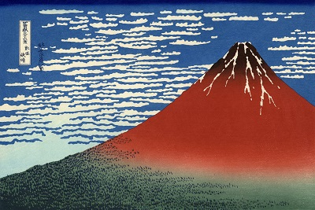
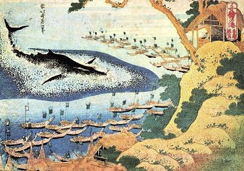

Katsushika Hokusai (葛飾 北斎) was a Japanese artist, ukiyo-e painter and printmaker of the Edo period. Born in Edo (now Tokyo), Hokusai is best known as author of the woodblock print series Thirty-six Views of Mount Fuji (富嶽三十六景 Fugaku Sanjūroku-kei, c. 1831) which includes the internationally iconic print, The Great Wave off Kanagawa. Hokusai created the Thirty-Six Views both as a response to a domestic travel boom and as part of a personal obsession with Mount Fuji. It was this series, specifically The Great Wave print and Fine Wind, Clear Morning, that secured Hokusai’s fame both in Japan and overseas. As historian Richard Lane concludes, "Indeed, if there is one work that made Hokusai's name, both in Japan and abroad, it must be this monumental print-series". While Hokusai's work prior to this series is certainly important, it was not until this series that he gained broad recognition.
“From the age of 6 I had a mania for drawing the shapes of things. When I was 50 I had published a universe of designs. But all I have done before the the age of 70 is not worth bothering with. At 75 I'll have learned something of the pattern of nature, of animals, of plants, of trees, birds, fish and insects. When I am 80 you will see real progress. At 90 I shall have cut my way deeply into the mystery of life itself. At 100, I shall be a marvelous artist. At 110, everything I create; a dot, a line, will jump to life as never before. To all of you who are going to live as long as I do, I promise to keep my word. I am writing this in my old age. I used to call myself Hokusai, but today I sign my self 'The Old Man Mad About Drawing.”
― Katsushika Hokusai
The Great Wave off Kanagawa (神奈川沖浪裏 かながわおきなみうら Kanagawa-oki nami ura, lit. "Under a wave off Kanagawa"), also known as The Great Wave or simply The Wave, is a woodblock print by the Japanese ukiyo-e artist Hokusai. It was published sometime between 1829 and 1833 in the late Edo period as the first print in Hokusai's series Thirty-six Views of Mount Fuji. It is Hokusai's most famous work, and one of the most recognizable works of Japanese art in the world.
Fine Wind, Clear Morning (Japanese: 凱風快晴 Gaifū kaisei), also known as South Wind, Clear Sky or Red Fuji, is a wood block print by Japanese artist Hokusai (1760–1849), part of his Thirty-six Views of Mount Fuji series, dating from c. 1830 to 1832. The work has been described as "one of the simplest and at the same time one of the most outstanding of all Japanese prints".
Chie no umi (千絵の海) is a chūban yoko-e (19 × 25.4 cm) sized woodblock print series by the Japanese artist Hokusai. The ten fishing-themed prints comprise one of Hokusai's rarest sets. Published by Moriya Jihei, it seems to have been issued around 1832–1834 and publication of the prints ceased abruptly. Some preparatory drawings are extant for prints that were never made.
